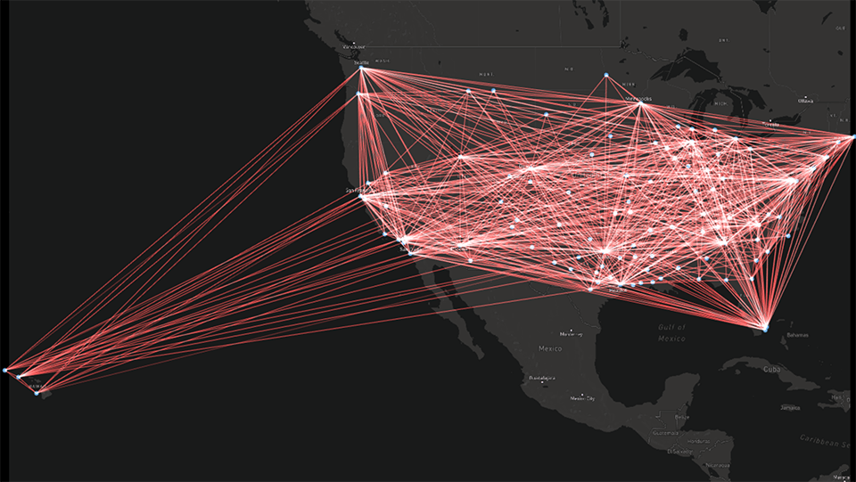
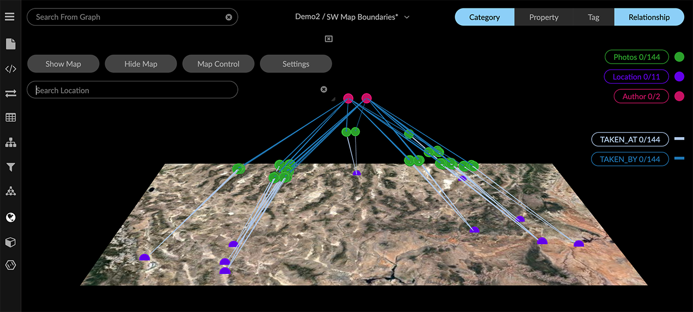
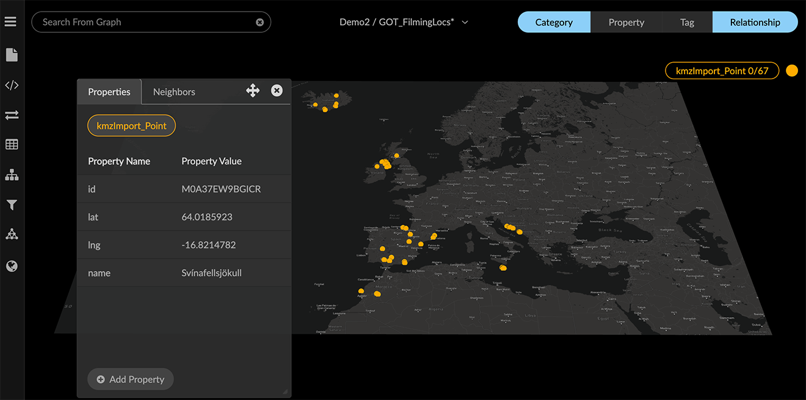
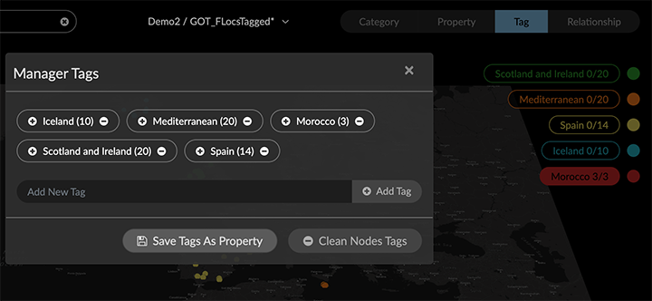
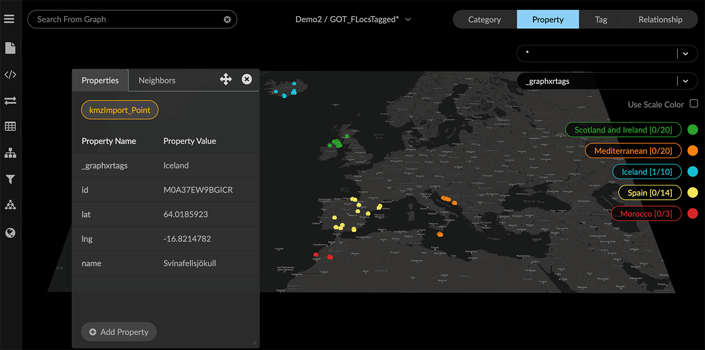
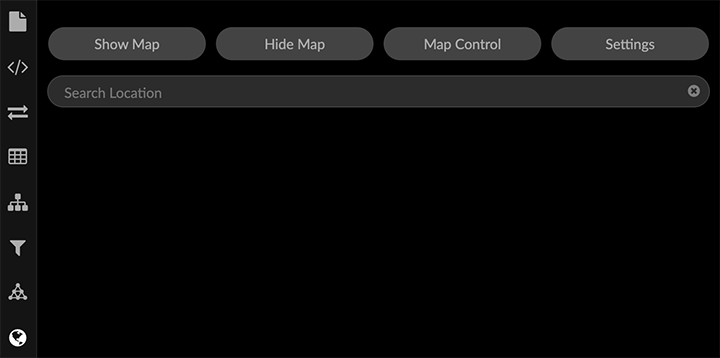
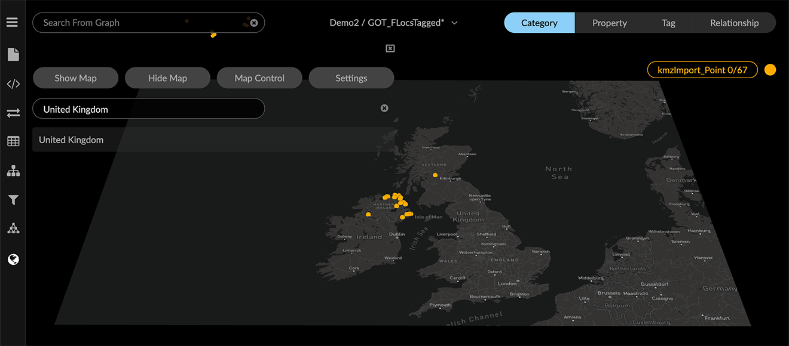
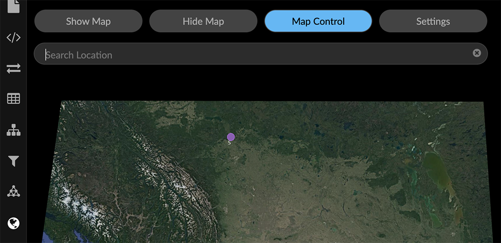
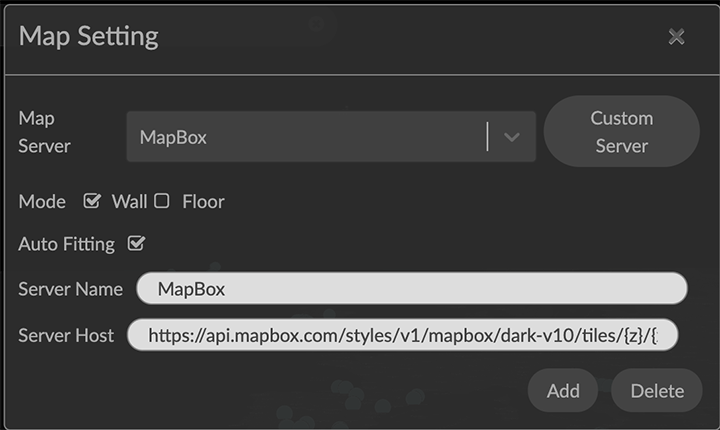

Display Data on a World Map The Map panel lets you position nodes on a world map. The map servers provided by default are Mapbox, Google, and OpenStreetMap. When you open the Map panel, a world map is displayed and nodes in the project space that have latitude and longitude property values are automatically dropped onto the map.  Nodes with no latitude and longitude coordinates which are connected to those on the map are also displayed with their connecting edges, positioned above the map. By default, a force-directed layout is used for these nodes, unless a geometric layout has been applied to them.  Nodes with geospatial coordinates are pinned to the map until you hide the map, at which time they are released and displayed in the default force-directed layout. Format for Latitude and Longitude coordinates Geospatial data must be encoded in the data in separate latitude(lat) and longitude(lng) properties as follows: Property Name Example Value Latitude lat -74.006393 Longitude lng 40.714172 The lat and lng values must be floating point, not strings. Most lat-long data are encoded that way, but if not, strings can be transformed using toNumber or a custom transform in the f(x) transform panel. The .KML and .KMZ (Keyhole Markup Language/Keyhole Markup Zip) files used by mapping applications such as Google Earth contain appropriately encoded coordinates, and you can map these files directly in GraphXR.  Navigating and working with mapped data When you click Map in the Main Menu, the Map panel opens, automatically displaying nodes pinned to their geospatial locations on a 2D map surface rendered in the 3D graph space. Desktop navigation and data selection is the same as for other layouts. You can: Navigate the mapped nodes using any GraphXR navigation method (for example, pan, zoom, rotate, Center To a single node or selection of nodes, and Fly Out to view all the mapped data) Select nodes using any selection method, and perform any of the data transformations, editing, or tagging available in the graph space. Save data views or snapshots for use in data visualization. For example, we can tag groups of nodes according to regions on the map. Select the nodes, and click Tag to open the Manager Tags dialog.  YOu can also click Save Tags as Property to save the tags as a _ graphxrtags property, then used the Property list set persistent colors for each value. If tags aren’t saved as a property, they appear as white bubbles in the legend’s Tags list. You can click the list bubble to select these tagged nodes, but since they don’t appear in the Property list, you cannot assign a color or icon. In the map below, tags have been created to assign regions to sets of nodes.  You can use a tag to select nodes by region then click the Center To icon to zoom in to the center point of the selection on the map. Using the Map Panel Click the Map menu item to display the Map panel, which includes: Show Map to re-set the map (for example, after you have zoomed in to selected data, or flown away to a search location). Hide Map to dismiss the map and return the mapped data to the default force layout. Search Location bar to enter a place name and fly to that location. Map Control to reposition the map and adjust its boundaries. Setting to select a map server, install custom map servers, and set Mode and Auto Fitting options.  Using Show Map and Hide Map Opening the Map panel automatically displays a map with boundaries set according to the coordinates in your data, and drops your graph data onto it. Click Hide Map to hide the map and return the data to the default force layout. Click Show Map to: Show the initial map again after using Hide Map. Reset the map to its initial position after using Search Location or Map Control. You can click the Map panel icon to dismiss the panel. This only removes the panel, not the map. When you are done working with a map, click Map to open the panel, then click Hide Map. Flying to a Search Location You can fly to any named world location or region by entering its name in the Search Location bar. There does not need to be any mapped data for that location. To fly to a named location: Open the Map panel. In the Search Location bar, enter the name of a location (e.g. United Kingdom) and click it on the search list. The map centers on the named location.  To reset the map, clear the search by clicking the X icon in the search bar, then click Show Map. Using Map Control A map boundary is initially set based on the locations in the graph data, but a wider view is often desirable, for example, to display additional areas for which there is no data. Map Control mode lets you adjust the map boundary temporarily. When you click Map Control, 3D navigation is de-activated. To adjust map boundaries: Open the Map panel and click Map Control. The button turns blue, indicating you are in map control mode.  Set the map boundaries with the following mouse controls or their equivalent keyboard shortcuts: Pan (left mouse click_drag) Zoom (mouse scroll or 2+left mouse click drag) Click Map Control to exit and resume 3D navigation with the adjusted map. Whenever you click Show Map, map boundaries are reset to the initial area bounded by the locations in the data. To retain adjusted boundaries you set in Map Control, de-select the AutoFitting checkbox in the Setting dialog. Using Map Setting options Map Setting options let you: Select an installed map server (e.g. MapBox, Google or OpenStreetMap) Add or delete custom map servers. Set Wall or Floor mode. Select or de-select the Auto Fitting option. 